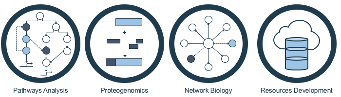

Postdoctoral Researcher, Bader Lab
The Donnelly Centre
University of Toronto
160 College Street, Room 630
The Donnelly Centre
University of Toronto
Toronto, Ontario
Canada, M5S 3E1
Map
Email: mohamed.attiashahata[AT]utoronto.ca

My research interests are highly interdisciplinary, and they lie at the intersections of computational biology/bioinformatics, proteogenomics (proteomics + genomics), systems biology, cancer genomics and network biology. Principally, my research has dealt with 1) signaling pathway analysis, modeling, and simulations, 2) Proteogenomics, 3) Network biology, 4) software and database systems development.
My current focus is the analysis of disease multi-omics data particularly assessment of cancer mutations impact on protein interaction networks and gene regulatory networks and finding somatic mutations in disease conditions using proteogenomic approaches. I have a special interest in methods, software and database systems development.
Research Interests
1. Signaling Pathways Analysis:
During my internship and my Master's, I worked for two years at the System Immunology Group (Keio University - Japan) in analyzing, modeling and simulating the innate immunity signaling pathways, namely the Toll-like Receptor (TLR)-3, TLR-4 and the Tumor Necrosis Factor (TNF)-α signaling pathways. In this research, I was able to predict several signaling features in the three pathways that were followed later by several experimental confirmations from our group or independent groups. For pathway modeling and simulation I mainly used the E-Cell modeling platform, developed at Keio University, plus several other platforms such as Cellware, Cell designer and CoPaSi.
Example publications: Helmy et al, PLoS One, 2009, Selvarajoo et al, PLoS One, 2008
2. Proteogenomics (Proteomics + Genomics):
Proteogenomics is the utilization of large-scale proteome data in genomic analysis e.g. genome annotation. My PhD research focused in developing comprehensive and integrated approach for combining proteomic and genomic data in a single analysis. Particularly, I addressed the problem of the high false discovery rate (FDR) when using 6-frame translated genomic data in the peptide identification process as well as speeding up large-scale and high throughput data analysis in MS-based proteogenomics. I developed the Mass Spectrum Sequential Subtraction (MSSS) method, a novel bioinformatics method that reduces the FDR when searching 6-frame translated genome database and speeds up the peptide sequence identification from large-scale MS-based peptide spectra datasets. MSSS method was later implemented in Peppy v2.0, the proteogenomics search tool developed by Gene Effects Inc. (USA).
Example publications: Helmy et al, Genes to Cells, 2011
Onco-Proteogenomics is the application of proteogenomics in cancer. The first attempt to apply a proteogenomics approach in cancer was my work published 2010 where I tried to identify mutated peptides in cancer sample (HeLa cells) using MS/MS proteomics and RNAseq data. I coined the term Onco-Proteogenomics to name this type of analysis and the field was latter named after this term.
Example publications: Helmy et al, Genome Biology, 2010
Example of publications acknowledged me coining the term Onco-Proteogenomics:
Alfaro et al, Nature Methods, 2014,
Locard-Paulet et al, Expert Review of Proteomics, 2016,
Subbannayya et al, Expert Review of Proteomics, 2016
3. Network Biology:
My current focus is understanding the role of mutations in cancer and how they affect the protein interaction networks and the gene regulatory networks. I am developing new methods to computationally predict the mutations that affects the binding peptides in the proteins and the binding sites in the gene promoters. Through identifying these mutations, we can predict the cancer driver genes and experimentally validate the best predictions. Such methods are very important now with the rapid accumulation of cancer mutations (41 million mutations to date – ICGC data portal). This work is part of the International Cancer Genome Consortium (ICGC).
4. Methods, Software Tools and Online Resources Development:
The Mass Spectrum Sequentail Subtraction Method (MSSS): In mass spectrometry-based proteomics, six-frame genome searches present a major since the vast majority of peptides populating six-frame databases do not exist in nature, which increases the chances for false positive spectrum matches. This lead to spurious inflation in the number of “novel” identifications. The MSSS method addresses this point when searching multiple databases. The process involves searching proteomic and genomic databases in sequence with protein database searches preceding the genomic. For each database searched, the 1% FDR was estimated and all spectra identified at that cutoff were removed from the body of spectra used in the next database search. Removing positively identified spectra with each database makes the searchers 50% faster searches and neatly addresses the false positive conundrum for the novel, genome-only matches.
Example publications: Helmy et al, Genes to Cells, 2012
The ProteoGenomics Features Evaluator (PGFeval): PGFeval is a software tool designed and developed for the evaluation of the proteogenomic novelty of the peptides identified using means of high throughput proteomic approach. Further, PGFeval visualize the gene annotation including the identified peptides, its positions and its proteogenomic novelty.
Example publications: Helmy et al, BMC Plant Biology, 2011
The Rice Proteogenomics Database (OryzaPG-DB): OryzaPG-DB is the rice proteome database based on shotgun proteogenomics that contains peptides obtained from shotgun-based proteomics and phosphoproteomics with their product ion spectra, as well as updated annotations, side by side with the corresponding protein, cDNA, transcript and genomic sequences and information.
Example publications: Helmy et al, Frontiers of Plant Sciences, 2012,
URL
The Cancer Variants Database (Can-VD): The Cancer Variants Database (Can-VD) is an online resource for the assessment of the impact of cancer mutations on protein-protein interactions (PPI) networks. Can-VD stores the PPI interaction networks mediated by wildtype and cancer variants and visualizes the overlay of the two networks in order to understand the effects of mutations on the network, and consequently, their cellular and biological impact.
Under preparation, URL
The Interface-based Protein Interaction Networks Database (IBPN-DB): The Interface-based Protein Interaction Networks Database (IBPN-DB) is an online resource for gathering and storing the published interface-based (IB) protein-protein interaction networks (IN) predicted using any PPI prediction method. TOR-IBIN aims to make these networks available in a central repository with unified format and comprehensive search functions that maximize the use of these data. .
Under preparation